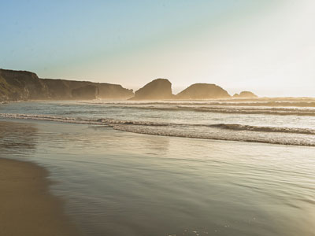

We are the Larsens. We are the proud owners of Bountiful Foods.
Our story started long ago from strong family roots in farming. Over time, our family farms were sold and time moved on.
But we never forgot our roots; we had a calling to the land and our hearts desired to farm. We both wanted a connection to our food and the land it was raised on. We decided to take the leap and start small to grow the food we love.
We have created our own story and paved our own way to offer organic and fresh produce. As we continue to build Bountiful Foods from the ground up, we find great joy as stewards of this land while sharing nutritious food to families near and far.
We hope to someday have a homestead that we can pass down to our children, but until then we cherish the opportunity that our family has given us to work with the land.
Our story is still unfolding and the future of Bountiful Foods begins with each new day. We are farming together as a family while passing down beliefs and values to the next generation. Thanks for your support and appreciating REAL food.
About Organic Farming
We are steadfast in keeping our farming practices true to our vision for a better food system.
Crops are organic when they are grown on a piece of land without any non-organic material applied to the land for the past three years. Each year, a certified organic farm is inspected by a third-party certifier who walks fields, reviews receipts and inspects existing inventory and other records to verify that an organic farm is only using materials permitted by the National Organic Program’s standards.
In general, if an item can be found in nature, it can often be considered organic. If the item has been chemically altered from the form in which it was found in nature, it is likely prohibited for use in organic agriculture.
We care about reducing food miles, connecting with our customers, providing a healthy work environment, promoting biodiversity and growing varieties of crops that tasted better while operating an environmentally and economically sustainable farming system. Today’s organic standard does not certify for these items, but we are steadfast in keeping our farming practices true to our vision for a better food system.
Information from: https://www.farmfreshtoyou.com/about/

About Carlsbad, CA
We are the Larsens. We are the proud owners of Bountiful Foods.
Known as “The Village by the Sea,” the city of Carlsbad offers the charm of a European town with the conveniences of a large city. As you wander streets lined with antique stores, boutique shops, and sidewalk cafes, you’ll soon discover much more, including miles of coastline, beautiful flower gardens and world-class resorts.
With a perfectly mild climate, each season offers a variety of unique events and activities, from street fairs to art walks. Steps away sit clean, uncrowded beaches for swimming, sunbathing and surfing as well as beautiful lagoons for fishing, bird-watching and nature trail hikes. Venture further to discover the unique destinations of LEGOLAND® California and SEA LIFE Aquarium or the nearby attractions of San Diego and Los Angeles.
Having only 103,000 residents, the city Carlsbad has also been able to maintain its gorgeous open spaces, while providing a friendly small-town atmosphere and unmatched amenities. No matter what you choose to do on vacation, Carlsbad, California, promises to offer up special experiences and fun-filled memories that will last a lifetime.
Information Source: https://visitcarlsbad.com/about-carlsbad/